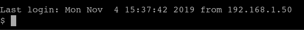
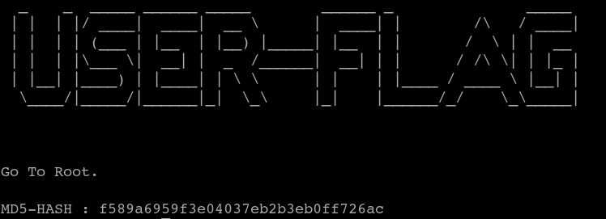

8. SSH (First flag)
$
ssh
-p 2525 blackjax@192.168.12.24
Output:

After logging in, we enter the following command to proceed in the bin / bash shell. This command will untie ctf. Just
don't copy-paste
, type manually.
$ python -c
'import pty;pty.spawn("/bin/bash")'
$
pwd
$
ls
$
cat
user.txt
Output:

We found our first flag.
Index